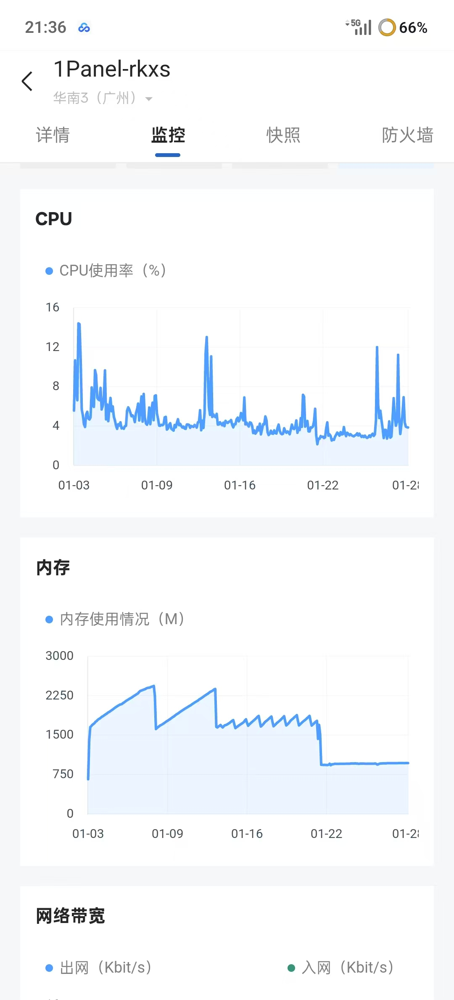
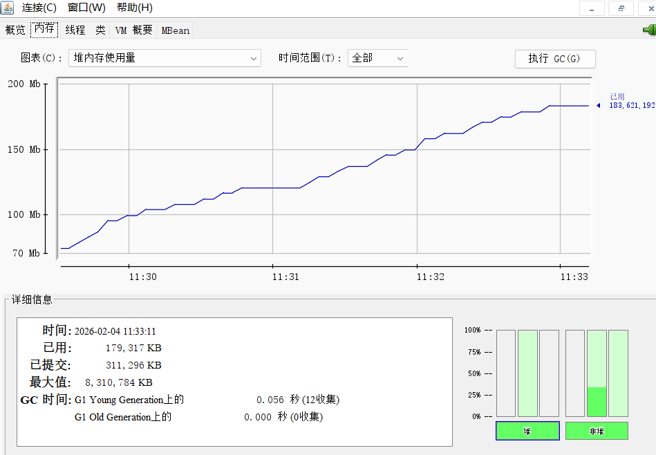
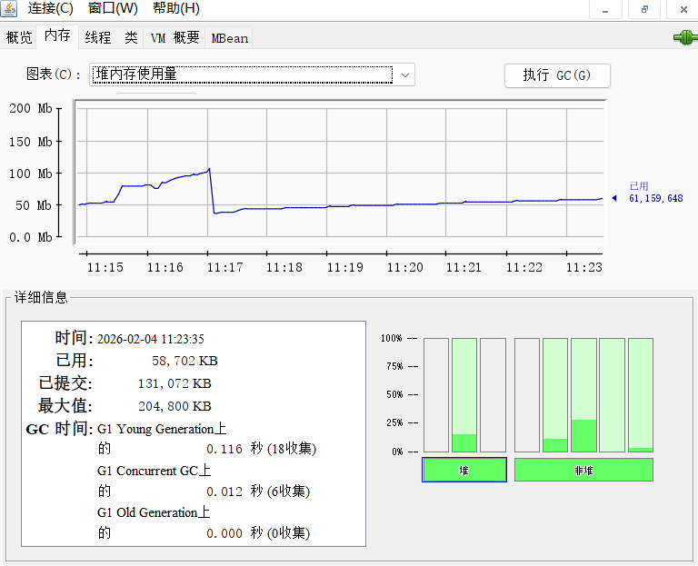
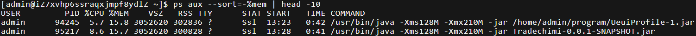

记关于如何压缩 Java运行 所占内存一事¶
最初开了 70 一天的服务器¶
仅开了一个 Jar 应用，却使用到了 2000M 多的内存，且持续走高，发觉不对。分析内存占用后，发现 RocketMQ 内存占用异常高
后面发现是所用MQ版本有内存泄漏的问题。暂时使用 定时任务 定时重启 MQ 来应对 考虑到项目本身仅仅只是使用 MQ 做解耦，对持久性要求有限，且受限于内存大小，发觉没必要为此开 MQ，于是将其换为 本地MQ，这也是 MiniRocketMQ 的由来 随后问题得以解决，且大幅降低了内存消耗

后来为了把 2 个 Jar 压到一起运行¶
同时想保持 1G 内存以内，以降低部署成本 (最后降了一半，低峰时，可以降更多)
只好去研究怎么调参，最直接关联的参数即 -Xmx -Xms，限制了 Jar 运行时的最大堆内存的大小以及初始化时的大小。 利用 jdk自带工具 jconsole 在不同参数下内存占用作用后，觉得是可行之路


此处的 堆内存 划重点，最初以为是限制总内存大小，当发现效果不如预期时，误以为是因为 设置内存过小，导致GC频繁且回收不过来所致，于是曾尝试过几次又适度调大，让其有发挥的空间，期望能实际占用小。最终发现不如不带参数的效果好。回到了原地 本质上就是因为 没理解 -Xmx -Xms 的准确含义，后面通过更细致的对非堆区域的限制，来真正的控制总内存大小 关于设置参数的方法，可以使用 jstat 获得各 JVM 区域的内存使用情况的数据，给到 AI，结合自身所需内存限度情况，进行设置 在经过一次过于激进的调试后，在避开了 因为分配的内存过小导致初始化的一些对象无法完全生成导致无法启动的错误之后，得到了符合要求的参数配置 -Xms64M -Xmx80M -XX:MetaspaceSize=32M -XX:MaxMetaspaceSize=64M -XX:MaxDirectMemorySize=24M -XX:ReservedCodeCacheSize=24M -Xss256K -XX:+UseContainerSupport -XX:+UseSerialGC -XX:TieredStopAtLevel=1 -XX:+DisableExplicitGC -XX:+UseCompressedOops -XX:+UseCompressedClassPointers 除了限定 堆，元空间，栈，以及对 JIT 编译的代码的缓存 的大小做了限制之外。采用 SerialGC，也是因为 G1 本身会消耗更大的内存 (尽管 jdk17下 默认就是 G1)，且 G1 在多线程更有优势，而该服务器最初使用的是 1核，现在也才 2核 而已。最后还启用了压缩指针

误入歧途¶
期间，由于服务无法正常获取后端数据，且报网络问题，曾一度认为是 cpu核 不够， 导致处理垃圾回收时 stw 时间过长，导致响应失效。于是乎做了下述操作
- 升cpu核数(升后加载的速度确实变快了，但对于解决问题也无济于事)
- 继续增大内存，减少垃圾回收，最终却无济于事
最后，发现是因为 使用 mariadb 时，权限与真正 mysql 不一致导致了后端无法获得数据 (然而命令行使用 java -jar 则不会出现这个问题，所以难以发现)。于是又把内存改回去了，毕竟留有一定的 缓冲区间，目前内存利用率 长时间保持 75% 上下
那么，代价是什么？ 最直观的体现：加载页面并不快。然而，对于一个后端学习者而言，或许更高的内存的价格并非完全不可接受，但是，有钱拿又能锻炼自己的机会，为什么要放过呢？
后续¶
后续就是改静态网页了，取消用Jar，改vue配js作后端(虽然静态，但是阅读一下本地文件需要后端)
然后对于核数，改回1核，内核保持1~2G，不用2核一方面是非cpu密集型，另一方面也是主要方面是cpu利用率基本为0%，实在没必要